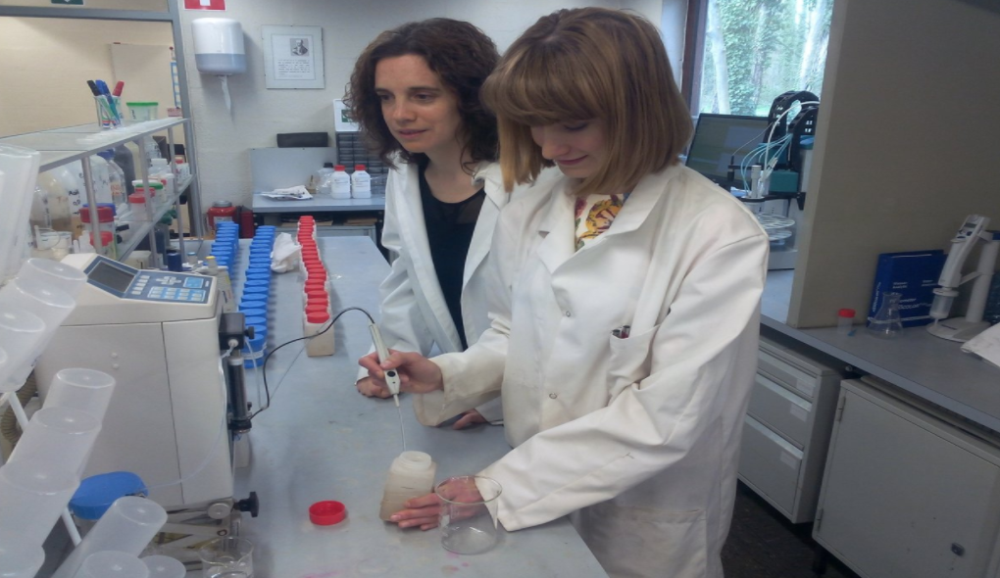
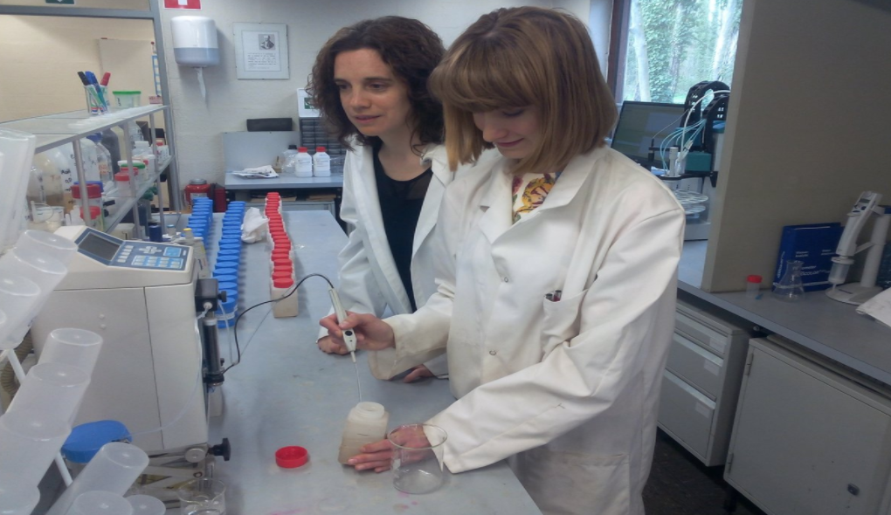

Meetings
Attendance and networking on water contamination and remediation topics. Presented a new idea for groundwater quality monitoring addressed to UN's clean water Sustainable Development Goals
12/6/2017 - 13/6/2017. YEAR conference, Brussels, Belgium. Priyanka.
Stakeholders: Advisors, Administration, Scientists and Doctoral researchers.
Introduction of Marie Curie INSPIRATION project and the individual Project goals to fellow researchers and scientists attending the conference. More information can be found at here.
Stakeholders: Advisors, Administration, Scientists and Doctoral researchers.
Introduction of Marie Curie INSPIRATION project and the individual Project goals to fellow researchers and scientists attending the conference. More information can be found at here.
1,5 hours meeting with introduction to INSPIRATION, Marie Curie fellowships and the PhD project tasks with respect to the respective ecological field site in Flanders
10/3/2017 - 10/3/2017. VITO head office, Mol, Belgium.
30/5/2017 - 30/5/2017. VITO satellite office, Antwerp, Belgium.
Stakeholders: Belgian government representative from Natuurpunt, researchers and scientists.
Introduced the INSPIRATION Project with discussions on relevance of this particular field site to be included in this PhD project.
30/5/2017 - 30/5/2017. VITO satellite office, Antwerp, Belgium.
Stakeholders: Belgian government representative from Natuurpunt, researchers and scientists.
Introduced the INSPIRATION Project with discussions on relevance of this particular field site to be included in this PhD project.
A whole day of PhD networking event where individual projects were briefly discussed in teams and presented (pitches)
9/10/2017 - 9/10/2017. Energy Ville in VITO Genk office, Belgium. Priyanka.
Stakeholders: VITO PhDs, administrative staff, researchers and scientists
Introduced the INSPIRATION Project with discussions on the importance of phosphorus contamination in the groundwater.
Stakeholders: VITO PhDs, administrative staff, researchers and scientists
Introduced the INSPIRATION Project with discussions on the importance of phosphorus contamination in the groundwater.
Discussion possible ways of collaboration with the research group from UFZ (Germany). Arranging the time for the common field campaign.
10/5/2017 - 10/5/2017. University of Liege (Belgium). Olha.
Stakeholders: Professionals in the field
Introduction of our INSPIRATION Project (motivation of the study, research approach, methods to be applied etc.
Stakeholders: Professionals in the field
Introduction of our INSPIRATION Project (motivation of the study, research approach, methods to be applied etc.
Meeting with the members of "Hydrogeology and Environmental Geology" and "Applied Geophysics" research groups
3/7/2017 - 3/7/2017. University of Liege (Belgium). Olha.
Stakeholders: Professionals in the field
 Presentation of our INSPIRATION project as well as recent activities and results within its framework.
Presentation of our INSPIRATION project as well as recent activities and results within its framework.

Stakeholders: Professionals in the field
Presentation of our INSPIRATION project as well as recent activities and results within its framework.

Review Paper, "Isotopic composition of nitrogen species in groundwater under agricultural areas: a review"
23/10/2017. Olha.
Stakeholders: Professionals in the field
Co-authors: A. Jurado, A. V. Borges, K. Knӧller, S. Brouyѐre. You can find the paper here.
Stakeholders: Professionals in the field
Co-authors: A. Jurado, A. V. Borges, K. Knӧller, S. Brouyѐre. You can find the paper here.
Weekly meeting of the PhD group discussing the research outputs
30/1/2017 - 30/1/2017. Liège University, NCE group, Dept. of Chemical Engineering. Polina Damala.
Stakeholders: Scientists/Engineers, Administration
Introduction of ESR and INSPIRATION Project in the rest PhD candidates of the research group
Stakeholders: Scientists/Engineers, Administration
Introduction of ESR and INSPIRATION Project in the rest PhD candidates of the research group
Annual meeting of Geolys company
10/3/2017 - 10/3/2017. Geolys Sprl, Herve, Belgium. Polina Damala.
Stakeholders: Scientists/Engineers, Administration
Introduction of ESR and INSPIRATION Project at the company/partner of the network
Stakeholders: Scientists/Engineers, Administration
Introduction of ESR and INSPIRATION Project at the company/partner of the network
Weekly seminar focusing on the dissemination of the research at the department level
22/5/2017 - 22/5/2017. Liège University, Dept. of Chemical Engineering. Polina Damala.
Stakeholders: Scientists/Engineers
Introduction of ESR, INSPIRATION project, research findings and planning
Stakeholders: Scientists/Engineers
Introduction of ESR, INSPIRATION project, research findings and planning
Introductory presentations of ITN Marie-Curie projects and research goals at the department level
3/7/2017 - 3/7/2017. Liège University, Dept. of Hydrogeology and Environmental Geology. Polina Damala.
Stakeholders: Scientists/Engineers
Introduction of ESR, INSPIRATION project and research findings
Stakeholders: Scientists/Engineers
Introduction of ESR, INSPIRATION project and research findings